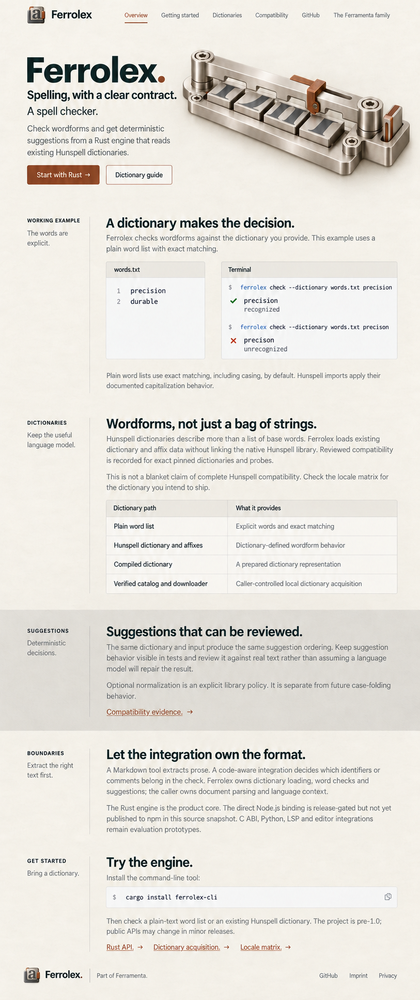
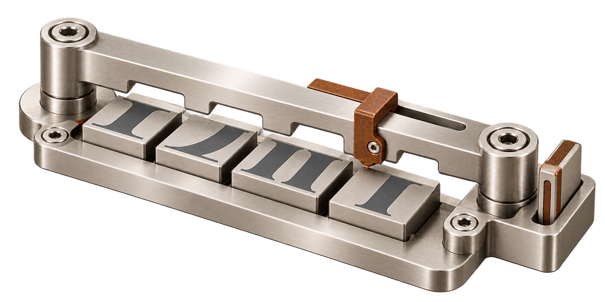

Open the current Plex / system UI HTML design
Ferrolex
Spelling, with a clear contract.
A spell checker. A wordform fits a dictionary profile; a keyed affix slot makes language rules visible.

Authoritative source copy · Exact homepage prompt · Frozen repository evidence
Supporting identity
A wordform fits a dictionary profile; a keyed affix slot makes language rules visible.
